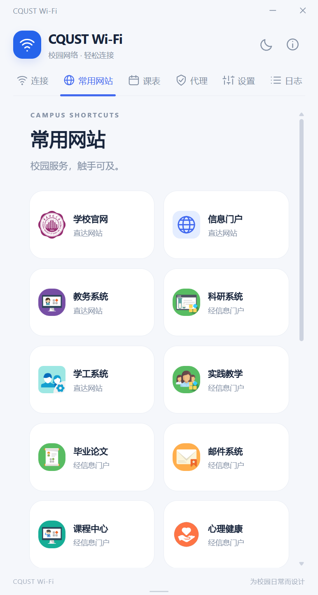

01 / CONNECTION
从“已断开”，
回到“已连接”。
按你的选择自动登录、定时检查。开启“始终保持连接”，掉线后就会在后台静默尝试重连。
已断开已连接
从清晨的第一节课，到深夜的最后一点灵感。
把校园网交给 CQUST Wi-Fi，把时间留给你。
Mac 版本适用于 Apple 芯片（arm64）；Android 需要 Android 10 或更高版本。
Windows v5.3.2 · macOS v5.1.1 · Android beta02
让灵感在线，让日常自在。
不必把注意力花在反复打开认证页上。
这些细节，是为真实的校园日常准备的。
从开机到在线，从一个账号到另一个。
让每一次校园连接，都更顺手。
桌面端登录系统后可自动启动；安卓不注册开机自启。
开启自动登录后，使用最近保存的账号连接校园网。
5 秒、10 秒或 2 分钟，按自己的节奏检查连接。
开启“始终保持连接”，掉线或被挤下线后在后台尝试重连。
凭据在本机安全保存，安卓使用 Keystore 加密，下次登录少填一步。
保存和管理多个校园网账号，常用账号随手可选、灵活切换。
通过已联网电脑，让更多自有设备共享连接，减少“两台设备同时登录”限制带来的不便。支持 HTTP / SOCKS5 与安卓 VPN 转发，实际可用性以校园网策略为准。
教务、学工、图书馆等 20 个校园服务入口，集中呈现。
安卓采用 Miuix 原生界面，网络、课表和外观设置集中在同一页；同号合并，异号清晰标注。
完整课表、调课、日历、课前提醒和桌面小组件。课表与上网独立认证，未开通校园网也可通过可用网络同步课程。
桌面与安卓共享同一二维码格式，安卓确认配置后连接；手动填写也保留。
新版本弹窗、Markdown 更新简介与安装包校验，下载后由你确认安装。
校园网上网认证仍需接入学校网络并具备相应权限。课表不依赖上网服务开通；macOS v5.1.1 尚未同步本次新功能。
不是把功能堆在一起，
而是让需要的东西，刚好在手边。

第一次使用也不必摸索。
需要的时候，还有清楚的认证帮助。
按设备下载 Windows x64、macOS Apple 芯片或 Android 测试版安装包。
输入学校账号密码，选择校园网、课表或两者。仅看课表无需开通校园网上网服务。
按需开启自动登录和保持连接。让下次联网，再省一点心。
自动获取认证入口失败？在软件的“认证帮助”中打开官方页面，复制跳转后的完整网址（含 ? 后的内容），粘贴即可。请勿将这段网址公开分享。
一个小小的客户端，
给校园日常多一点从容。

1.0.0-beta02 和 1.1.0-beta01 可直接覆盖升级。仅最早的 1.0.0-beta01 使用旧测试签名，需自行卸载重装，会清除旧数据。VPN 需系统授权。
请选择 .apk 安装包，不是 Source.zip。若出现解析错误，请先核对文件是否下载完整。
f8f405a7b570…a4103ab账号、同步和课表设置移至课表底部，为本周课程安排留出更多空间；保留校园网、设备代理与扫码互联。
统一网络与课表设置、账号和关于；双图标联名与两个交流群。移除失效内嵌认证网页，改用原生 Wi-Fi 探测，并增加正式包兼容签名与安装检查。
修复贴边收起后的边框残留，吸附默认关闭；新增可选的桌面端代理功能。
贴边自动收起、悬停平滑滑出、拖离解除吸附；更新检测回到设置底部，简介支持 Markdown。
浏览器内核补全动态认证跳转，新增 GitHub 更新检测、窗口吸附与官网入口。
改进同网络重连探测，补充认证引导；优化窗口调整、滚动条与界面留白。
验证码图片加载与刷新，常用网站入口，校徽安装向导。
Tauri 2 与 Rust 后端，即时设置、姓名显示和更紧凑的桌面体验。
不是。CQUST Wi-Fi 是为重庆科技大学校园日常制作的非官方工具，不代表学校。请遵守学校网络管理要求，使用本人有权限的账号。
选择记住密码后，Windows 版使用凭据管理器保存，macOS 版使用系统钥匙串，Android 版使用 Keystore 加密存储。这个宣传网页没有账号密码输入框，不会要求你提交校园网凭据。
校园网环境和认证要求可能变化。自动探测失败时，软件提供官方认证入口及网址填入引导；遇到验证码时需要你手动填写，软件不会绕过它。
当前提供 Windows x64 安装包，使用系统 WebView2；缺少时安装器可引导安装。安装器未签名，可能出现 Windows 发行者提示。建议从本页指向的 GitHub Release 下载，并核对 SHA-256。升级前先退出托盘中的旧版。
可以。v5.1.1 已提供 macOS Apple 芯片（arm64）DMG 安装包，适用于 Apple 芯片 Mac，不适用于 Intel Mac。Mac 访问本页时，Mac 下载入口会优先显示；你也可以手动选择其他平台。
可以下载 beta02 测试版，需要 Android 10 或更新系统。支持课表、校园网认证、代理扫码连接与本机共享。VPN 与后台运行受系统授权和省电策略影响；beta01 迁移至 beta02 需自行卸载重装，旧数据会清除。
可以。GitHub 仓库公开提供源码、历史版本标签及各版 Release 附件。公开可见不等同于额外的许可授权，使用第三方代码和素材时请保留原有声明。